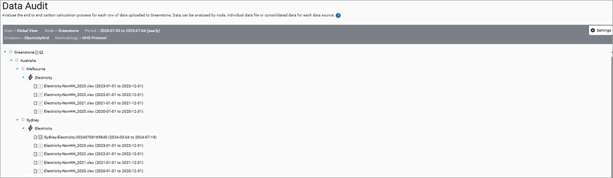
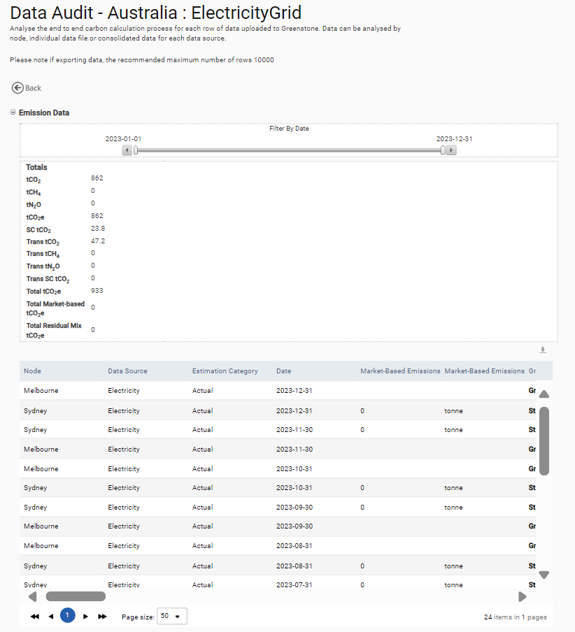

The dashboard menu also includes a data audit function which can be used to analyze each line of data uploaded to a particular node for a selected time period. The data can be analyzed at a file, data source or node level. Selecting a node allows you to view the calculations of the selected node, and those found beneath it in the organizational hierarchy. The dashboard must be used one emission type at a time.

Once you have selected a data source you will see a table of details containing the full emission breakdown and a line-by-line analysis of the data, which can be exported to Excel if required. Note: When exporting the dashboard, it is recommended you export no more than 10000 rows at a time.
The analysis includes a detailed breakdown of the GHG emissions calculation and confirmation of the source of conversion factors applied to the consumption data.
